3変数の陰関数でフィット
ImplicitFit-3Var
概要
このチュートリアルでは変数の陰関数を定義する方法と、フィットデータを使って陰関数フィットを行います。
必要なOriginのバージョン: OriginPro 9.0 SR0以降
学習する項目
このチュートリアルでは、以下の項目について解説します。
- 陰フィット関数を定義する
- 3つの独立変数から陰関数のフィッティングを行う
- フィット曲面を作図する
サンプルとステップ
データのインポート
- 新しいワークブックを用意します。ヘルプ: フォルダを開く: サンプルフォルダを選択して、サンプルフォルダを開きます。このフォルダ内のCurve FittingサブフォルダにあるEllipsoid.dat ファイルを探します。空のワークシートにファイルをドラッグアンドドロップしてインポートします。
- C列を選択して右クリックし、コンテキストメニューから列XY属性の設定：Z列を選択します。Originのメニューから作図：3D：3D散布図を選択します。グラフ上でダブルクリックします。作図の詳細ダイアログの左側パネルでLayer1を選択し、軸タブを開いてからX、Y、Zの長さを順番に100, 75, 50と設定しOKボタンをクリックします。3D回転ツールバーのフレームに合わせるボタンをクリックします。グラフは次のようになります。
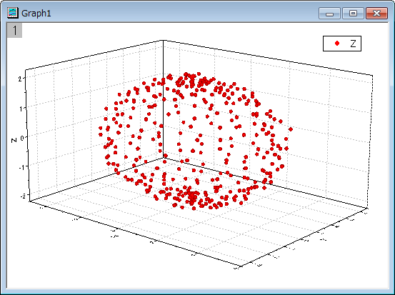
フィット関数を定義する
このグラフは楕円体でフィットする事ができます。この関数は次のように表現できます。
- 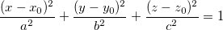
ここで、 \;") は楕円体の中心位置、a, b, cは各方向の形の半分の長さ、x, y, z はフィットデータの3つの独立変数です。
は楕円体の中心位置、a, b, cは各方向の形の半分の長さ、x, y, z はフィットデータの3つの独立変数です。
フィット関数は、フィット関数ビルダーツールを使用して定義できます。
- ツール：フィット関数ビルダーをメニューから選択します。
- フィット関数ビルダーダイアログの処理のゴールページで進むボタンをクリックします。
- 関数名と関数形式のページでは関数カテゴリーの選択/新規名称のドロップダウンリストからImplicitを選択します。次に関数名のエリアに Ellipsoidと入力し、関数モデルでは陰関数グループを選択します。進むをクリックします。
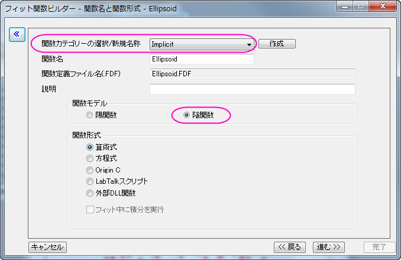
Note: 陰関数はImplicitカテゴリ内で定義する必要があります。
- 変数とパラメータページでは、変数エリアにx, y, zと入力し、パラメータエリアにはx0, y0, z0, a, b, cと入力します。進むをクリックします。
- 式形式の関数ページで、以下のスクリプトを関数内容編集ボックスに入力します。
(x-x0)^2/a^2+(y-y0)^2/b^2+(z-z0)^2/c^2-1
陰関数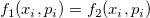内では、 (i=1,2..) は独立変数、 (i=1,2...) はパラメータとなり、Origin内ではfを推定値として 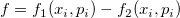 のように定義されています。パラメータタブで初期パラメータを以下のように設定します。
(i=1,2..) は独立変数、 (i=1,2...) はパラメータとなり、Origin内ではfを推定値として 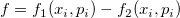 のように定義されています。パラメータタブで初期パラメータを以下のように設定します。x0=0 y0=0 z0=0 a=3 b=3 c=3
クイックチェックグループで評価ボタンをクリックして x=1, y=1, z=1 がf=-0.667になる事を確認します。
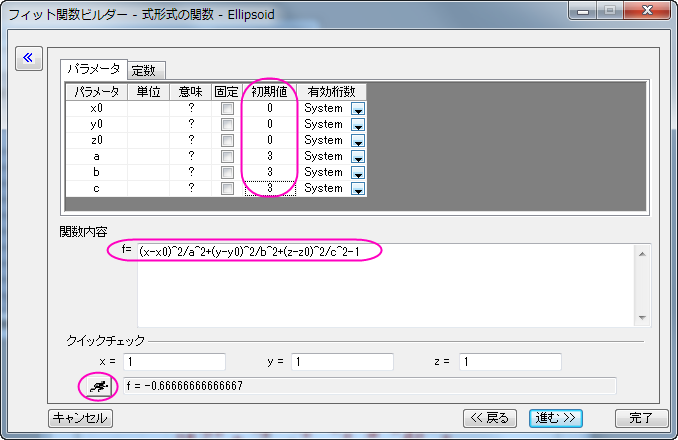
進むボタンをクリックし、もう一度進むボタンをクリックします。
- 境界条件と一般線形制約ページではa, b, cの下限値を次のように設定します。完了ボタンをクリックして、ダイアログを閉じます。
- 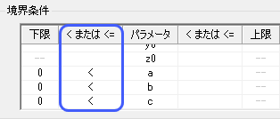
Note 陰関数がユーザファイルフォルダに保存されたという内容がメッセージログに表示されます。
曲線をフィットする
- Originは2つ以上の独立変数を持つ陰関数のフィットはワークブックからの入力データのみをサポートしています。グラフからはサポートしていません。つまり、フィットする前にフィットデータが入ったアクティブなワークブックを作成する必要があります。ワークブックをアクティブにしてから解析： フィット：非線形陰関数カーブフィットをメニューから選択します。NLFitダイアログで、設定：関数選択と選択して、関数ドロップダウンリストからEllipsoid 関数を選択します。
- データ選択ページに移動し、入力データ：範囲1を開き、「A:X、B:Y、C:Z」として割り当てます。設定パネルの下部にエラーメッセージが出力されます。エラーメッセージの情報に従い、フィット曲線ページを開き、Xのデータタイプのドロップダウンリストで入力データのフィットしたポイントに変更します。yのデータタイプとzは自動的に変更されます。
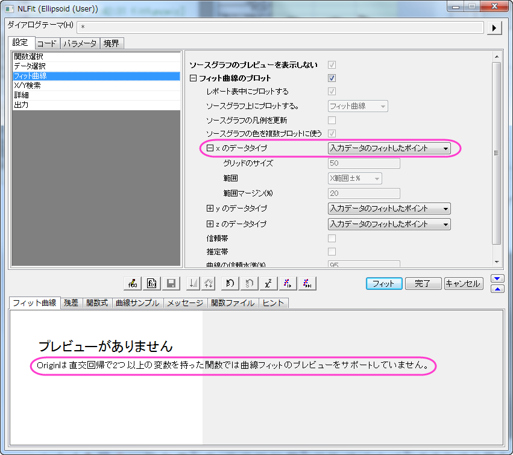
Note Originは2つ以上の独立変数を持つ陰関数でのフィットでは、NLFitダイアログ内でのフィット曲線プレビューをサポートしていません。
- フィット関数ビルダで初期のパラメータを知っていしているので、フィットボタンをクリックします。
フィット結果
フィットレポートに切り替えます。パラメータと統計値の表がレポートに表示されます。
フィットパラメータは以下の通りです。
| パラメータ
|
値
|
標準誤差
|
| x0
|
0.41073
|
0.01576
|
| y0
|
0.32043
|
0.01352
|
| z0
|
0.00147
|
0.00749
|
| a
|
4.00325
|
0.02076
|
| b
|
3.00097
|
0.01881
|
| c
|
1.99972
|
0.00933
|
そして、Adj.です。補正R二乗が0.99823となっているので、このフィット結果はとても良い事を示しています。Note Origin9.0 32ビット版とOrigin9.0 64ビット版でフィットした結果は若干異なりますが、64ビット版の方がより正確な結果を示しています。
FitODRCurve1ワークシートでは、最初の3列はフィットしたポイントのXYY座標を示しています。
Note 陰関数のフィッティングでは、x、y、zは全て独立変数であり、フィットが反復されるごとに値の調整が行われます。
フィット曲面
Origin9.0SR1では、2つ以上独立変数による陰関数のフィッティングではフィット曲面がレポートに表示されません。このような場合は、以下のように3Dパラメトリック関数グラフを利用して楕円グラフにフィットさせることができます。
- フィットレポートを選択して、スクリプトウィンドウで以下のLabTalkスクリプトを実行して、フィットされたパラメータ変数を入手します。
getnlr tr:=tt;
x0=tt.x0;
y0=tt.y0;
z0=tt.z0;
a=tt.a;
b=tt.b;
c=tt.c;
変数x0、y0、z0、a、b、cは以下の方法で利用することもできます。
- Graph 1をアクティブにします。メニューからファイル：新規作成：関数グラフ:3Dパラメトリック関数グラフを選択します。3Dパラメトリック関数グラフを作成するダイアログで、uを0からπに、vを0から2*πに設定します。X、Y、Zを以下のように定義します。
X(u,v)=x0+a*sin(u)*cos(v)
Y(u,v)=y0+b*sin(u)*sin(v)
Z(u,v)=z0+c*cos(u)
ダイアログ左下のドロップダウンリストで、アクティブなグラフに追加するを選択します。
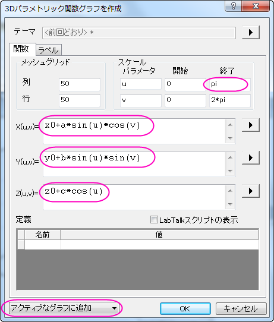
OKボタンをクリックして、ダイアログを閉じます。Graph 1に3D楕円グラフが追加されます。
- グラフ上でダブルクリックします。作図の詳細ダイアログで、以下のようにグラフをカスタマイズします。
Note Origin9.0では、OpenGLのバージョンが2.1以上の場合、3D透過に対応しています。Originのメニューからツール:3D OpenGLの設定と選択すると、ご利用いただいているPCのOpenGLバージョンを確認できます。バージョンが2.1よりも低い場合、3D透過のステップを無視してステップ3.2に進んでください。
- 左のパネルでLayer 1を選択し、サイズ/描画スピードタブを開き、スピードモード(必要に応じてポイントスキップ)グループでワークシートデータ、曲線あたりの最大ポイント数のチェックを外します。ライティングタブを開き、モードグループで平行光源を選択し、光の色グループで環境光に青を設定します。
- Layer1のブランチで2つ目のプロットを選択し、面タブを開いてから透明度を50%に変更します。塗りつぶしタブを開き、表面グループでひとつずつ塗りつぶす色を白にします。OKボタンをクリックして、ダイアログを閉じます。
楕円グラフにフィットしたグラフは以下のようになります。
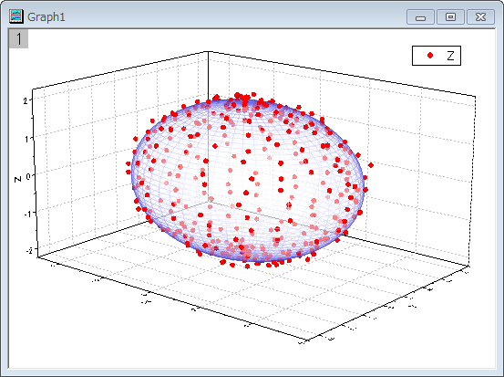